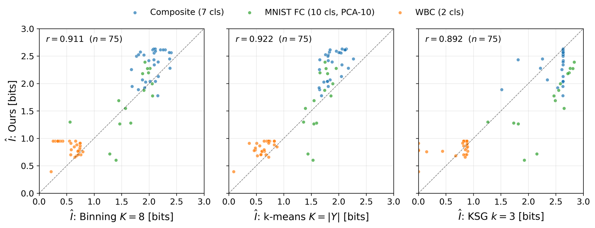
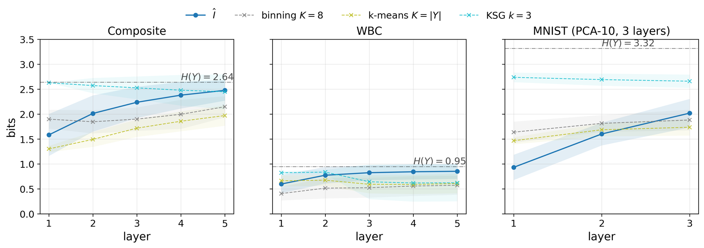
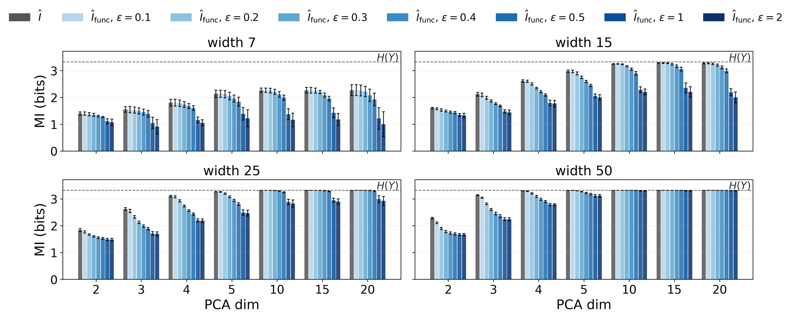
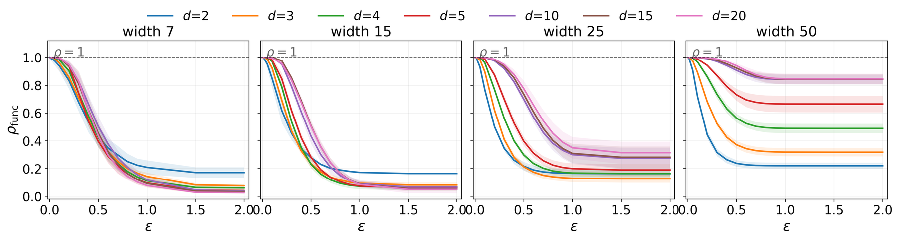

Main contributions
A ReLU network splits its input space into convex linear regions, and every input carries a discrete region label Π (its activation pattern) alongside its continuous representation T. Quantities involving Π live on a finite alphabet, so they need no bin width, bandwidth or cluster count. Building on this:
- Information decomposition. The mutual information I(Y; T) decomposes into geometrically interpretable terms: the routing information I(Y; Π), a within-region term I(Y; T | Π) and a routing-loss term I(Y; Π | T), with I(Y; T) − I(Y; Π) = I(Y; T | Π) − I(Y; Π | T).
- Routing estimator. A plug-in estimator Î(Y; ΩD) computed directly from the network's partition. In the well-sampled regime it approximates I(Y; Π), which lower-bounds the joint information I(Y; Π, T).
- Functional-equivalence quotient. When almost every sample gets its own region the plug-in estimate saturates at H(Y). The quotient merges regions whose linear operators differ by at most ε in relative Frobenius distance. ε is bounded in [0, 2] and dimensionless, and is reported and audited through the compression ratio ρfunc(ε).
- Empirical study. 75 networks on three structurally distinct datasets (the 2-D Composite dataset, WBC breast-cancer measurements and MNIST), plus a saturation study on PCA-reduced MNIST.
1. The routing estimator agrees with established MI estimators
One point per network: the last hidden layer at the last epoch, estimated on the same held-out points as three baselines. Within each dataset the points lie along the diagonal, so Î assigns the same bit counts as the baselines without any bin width, bandwidth or cluster count. This is an internal-consistency check of the estimator. It does not claim that I(Y; Π) approximates I(Y; T), and the two can differ in either direction.
- r = 0.911vs binning (K = 8, Miller–Madow)
- r = 0.922vs k-means (K = |Y|, Miller–Madow)
- r = 0.892vs KSG (k = 3)
- n = 75networks, pooled over three datasets

2. Layer by layer, routing information rises and stays below H(Y)
On all three datasets Î rises monotonically with depth, tracks binning and k-means at every layer, and stays at or below H(Y) on every layer of all 75 networks. KSG, which estimates I(Y; T) from the continuous representation, behaves differently. On MNIST FC it sits at about 2.7–2.8 bits while Î rises from about 0.95 to 2.0 bits, so the gap narrows from about 1.8 to 0.65 bits. By the decomposition, a KSG-above-routing gap means the within-region geometry carries class information the partition has not yet routed, and deeper layers route more of it into Π.

3. The functional quotient restores informative estimates under saturation
On PCA-reduced MNIST, as the input dimension d grows, wide networks give nearly every sample its own region and the raw estimate approaches H(Y) = 3.319 bits, whatever the network has learned. At ε = 0.5 and d ≥ 10 the quotient pulls the estimate back below H(Y) where there are redundant linear operators to collapse, and not where every region implements a distinct one.
- 0.27–0.43bits below H(Y), width 15
- 0.03–0.07bits below H(Y), width 25
- ≤ 0.004bits below H(Y), width 50 (stays saturated)

The compression ratio ρfunc(ε) shows where merging happens. Small-d networks drop sharply already at ε = 0.1, while large-d networks stay near 1 until ε ≈ 0.2–0.3. Both diagnostics point to ε ∈ [0.2, 0.5] as the operating range. Across layers, ρfunc = 1 at the first layer of every network and decreases with depth on average, so functional equivalence is a phenomenon of compositions.

What the estimate does not show
- Occupancy matters. The plug-in estimate is trustworthy only when regions hold several points, i.e. at small ρ = |ΩD| / N. Standard bias corrections do not repair a saturated partition: Miller–Madow over-corrects into negative values, and the others stay near H(Y). We therefore report ρ with every estimate.
- High routing information is not proof of learning. Trained on randomly permuted labels, the wide [25, 25, 25] Composite network still keeps 2.433 bits raw (2.329 after the quotient) about the true labels, close to H(Y) = 2.639 bits, at 15.9% test accuracy. Read a high estimate together with ρ and, where possible, a label-permutation control. Try it in demo 4.
- ε still matters inside the window. The quotient estimate moves with ε even in [0.2, 0.5], so ε is reported with every estimate and audited through ρfunc.